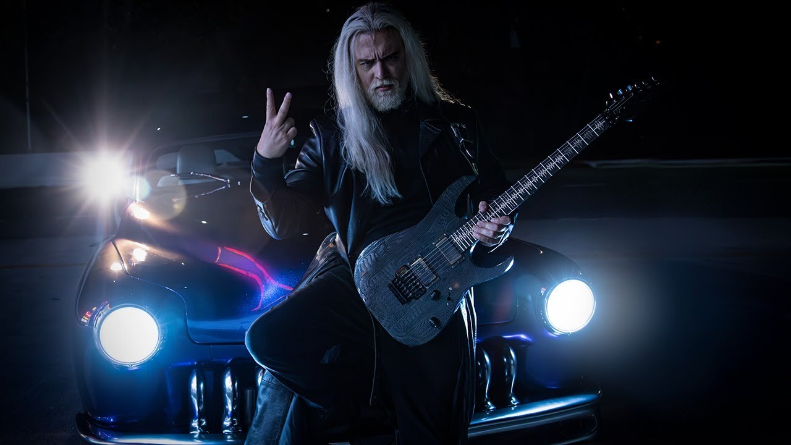

Meu artista favorito
Luis Fernando de Moura "Nando Moura" Cagnin

Nando no clipe "Reload"
Canal do youtube do Nando, que é cantor-compositor da banda Pandora101, guitarrista, professor de música, comentarista político e youtuber, onde ele fala sobre conservadorismo, cristianismo, filmes, séries, games, animes, músicas de rock, metal, etc.